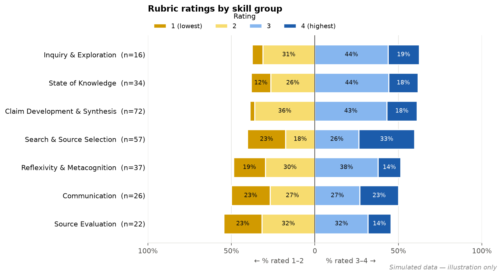
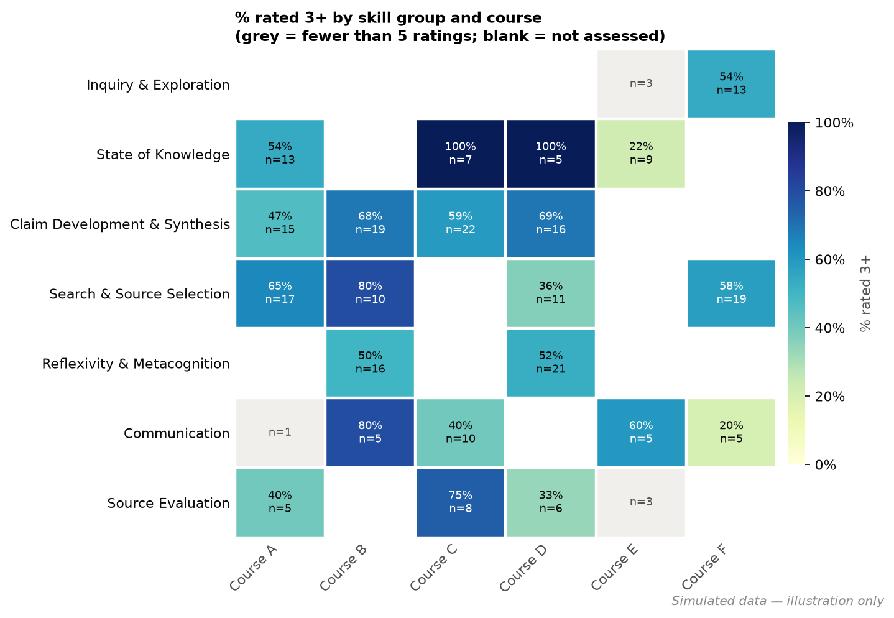

1. Loading and grouping rubric criteria
Ratings come from several courses whose rubrics word the same skill differently. Each criterion is assigned to a broader skill group by matching how its text starts, so punctuation and wording variants still land in the same group.
import gspread
from google.auth import default
from google.colab import auth
auth.authenticate_user()
gc = gspread.authorize(default()[0])
sheet = gc.open("<de-identified ratings sheet>")
dfs = {}
for ws in sheet.worksheets():
rows = ws.get_all_values()
dfs[ws.title] = (pd.DataFrame(rows[1:], columns=rows[0])
.replace("", pd.NA).dropna(how="all"))
data = dfs["ratings"].copy()
data["RatingNum"] = pd.to_numeric(data["RatingNum"], errors="coerce")
data["Criteria"] = data["Criteria"].str.strip()
# criterion text prefix -> skill group (real rubric wording omitted)
GROUP_RULES = {
"<prefix of criterion A>": "Inquiry & Exploration",
"<prefix of criterion B>": "Source Evaluation",
"<prefix of criterion C>": "Claim Development & Synthesis",
# ...
}
def to_group(criterion):
for start, group in GROUP_RULES.items():
if criterion.startswith(start):
return group
return "UNGROUPED" # flagged and reviewed by hand
data["SkillGroup"] = data["Criteria"].map(to_group)2. A reusable summary table
One function produces counts and percentages at each rubric level, the share rated 3 or higher, and medians for any grouping: by skill group, by criterion, or by course. Missing ratings are counted separately rather than silently dropped.
LEVELS = [1, 2, 3, 4]
def summarize(df, by):
"""Counts and % at each rubric level, % rated 3+, median, missing. % use rated rows only."""
g = df.groupby(by)
out = pd.DataFrame({"Rows": g.size(), "Rated (n)": g["RatingNum"].count()})
out["Missing"] = out["Rows"] - out["Rated (n)"]
counts = (df.dropna(subset=["RatingNum"])
.pivot_table(index=by, columns="RatingNum", values="Criteria",
aggfunc="count", fill_value=0)
.reindex(columns=LEVELS, fill_value=0))
counts.columns = [f"n={int(c)}" for c in counts.columns]
pct = counts.div(counts.sum(axis=1), axis=0)
pct.columns = [c.replace("n=", "%=") for c in counts.columns]
out = out.join(counts).join(pct)
out["% rated 3+"] = pct["%=3"] + pct["%=4"]
out["Median"] = g["RatingNum"].median()
return out.sort_values("% rated 3+", ascending=False)
by_group = summarize(data, "SkillGroup")
by_course = summarize(data, "Course")3. Diverging rubric chart
Levels 1–2 extend left of center and levels 3–4 extend right, so the balance of weaker and stronger ratings for each skill is visible immediately. Groups are sorted by the share rated 3+.

LEVEL_COLORS = {1: "#d19a00", 2: "#f7dc6f", 3: "#86b6ef", 4: "#1c5cab"}
def diverging_bar(summary, title, min_label=0.08):
s = summary.iloc[::-1] # highest % 3+ on top
y = np.arange(len(s))
fig, ax = plt.subplots(figsize=(10, 0.55 * len(s) + 1.6))
left = np.zeros(len(s)) # levels 2 then 1 grow leftward from 0
for lvl in [2, 1]:
w = s[f"%={lvl}"].values
ax.barh(y, -w, left=-left, color=LEVEL_COLORS[lvl], height=0.7)
for yi, wi, li in zip(y, w, left):
if wi >= min_label:
ax.text(-(li + wi / 2), yi, f"{wi:.0%}", ha="center", va="center")
left += w
right = np.zeros(len(s)) # levels 3 then 4 grow rightward
for lvl in [3, 4]:
w = s[f"%={lvl}"].values
ax.barh(y, w, left=right, color=LEVEL_COLORS[lvl], height=0.7)
for yi, wi, ri in zip(y, w, right):
if wi >= min_label:
ax.text(ri + wi / 2, yi, f"{wi:.0%}", ha="center", va="center")
right += w
ax.axvline(0, color="#52514e")
ax.set_yticks(y)
ax.set_yticklabels([f"{i} (n={int(n)})" for i, n in zip(s.index, s["Rated (n)"])])
ax.set_xlim(-1, 1)
ax.set_xlabel("← % rated 1–2 % rated 3–4 →")
ax.set_title(title, loc="left")4. Skill × course heatmap with small-sample masking
Not every course assessed every skill, and some cells have only a few ratings. Cells with fewer than five ratings are greyed out instead of colored, so a single rating can't look like a meaningful percentage.

MIN_N = 5
rated = data.dropna(subset=["RatingNum"])
n_tab = rated.pivot_table(index="SkillGroup", columns="Course",
values="RatingNum", aggfunc="count")
p_tab = (rated.assign(ok=rated["RatingNum"] >= 3)
.pivot_table(index="SkillGroup", columns="Course", values="ok", aggfunc="mean"))
shown = p_tab.where(n_tab >= MIN_N) # hide percentages with too few ratings
fig, ax = plt.subplots()
ax.imshow(np.where(n_tab.notna(), 1, np.nan), # grey layer = assessed but small n
cmap=ListedColormap(["#f0efec"]), aspect="auto")
im = ax.imshow(shown.values.astype(float), cmap="YlGnBu", vmin=0, vmax=1, aspect="auto")
for i in range(p_tab.shape[0]):
for j in range(p_tab.shape[1]):
n = n_tab.iat[i, j]
if pd.isna(n):
continue # blank = skill not assessed in course
big = n >= MIN_N
ax.text(j, i, f"{p_tab.iat[i, j]:.0%}\nn={int(n)}" if big else f"n={int(n)}",
ha="center", va="center", fontsize=8)
fig.colorbar(im, ax=ax, label="% rated 3+")